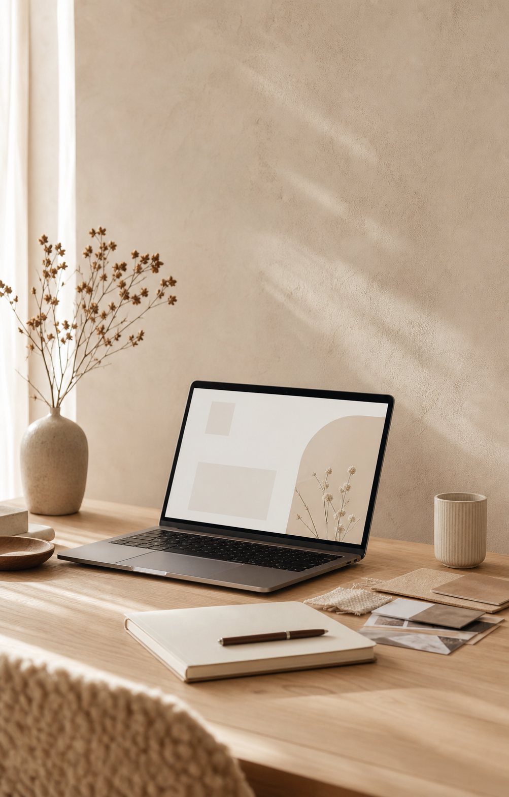
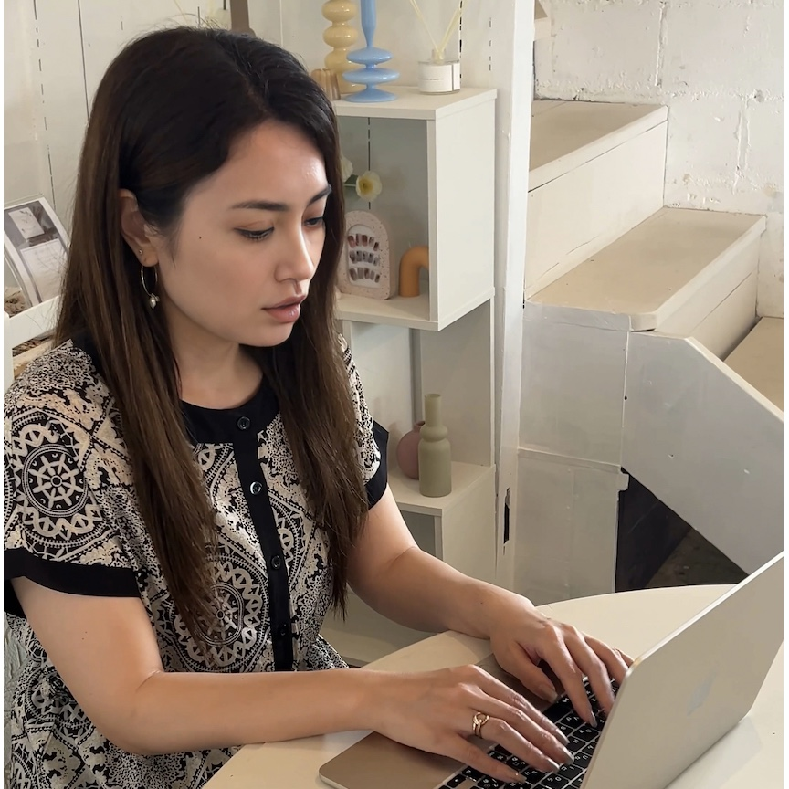

01
LP制作
構成・ライティング・デザイン・実装まで一貫して制作。読者の行動を想定し、スマートフォンで申し込みやすいLPに整えます。
- 構成設計
- 文章整理
- デザイン
- HTML実装
LP FLOW DESIGN FOR SMALL BRANDS
広告マーケターがつくる、
申し込みにつながるLP制作
サロン、教室、講師業、個人サービスの想いと世界観を整理し、InstagramやLINEからの流れまで。
読んだ人が安心して一歩進めるLPを設計します。

SCROLL
YOUR STORY, CLEARLY DELIVERED.
サービスへの想いはある。けれど、何をどう伝えれば申し込みにつながるのか、ひとりでは見えにくいものです。
広告マーケターの視点で、読者の気持ちの流れ、必要な情報、InstagramやLINEからの導線までを整理します。
あなたらしい世界観を置き去りにせず、お客様が「私に合いそう」と感じて一歩を踏み出せるLPを、一緒につくります。
FOR YOU
SNSを頑張っているけれど、
申し込みまでの流れが整っていない
サービス内容や魅力を、
まだうまく言葉にできていない
世界観を大切にしながら、
きちんと成果にもつなげたい
広告っぽすぎない雰囲気で、
信頼される導線を整えたい
ABOUT
LPデザイナーとして、個人ブランドや小さな事業のためのLP設計・デザイン制作を行っています。
IT企業でWebライター、LP運用担当、研修担当・AIセミナー講師、広告運用担当などを経験し、現在はLPデザイナーとして活動しています。
文章を整えること、伝える順番を考えること、申し込みまでの流れを設計すること。これまでの経験を活かしながら、見た目だけで終わらないLPづくりを大切にしています。
趣味
日々の中で心がほどける時間。カフェで過ごすことや、手を動かしてものづくりをする時間も大切にしています。

WHAT I CAN DO
見た目を整えるだけでなく、お客様が「私に合いそう」と感じ、
InstagramやLINEから迷わず申し込めるところまで設計します。
01
構成・ライティング・デザイン・実装まで一貫して制作。読者の行動を想定し、スマートフォンで申し込みやすいLPに整えます。
02
サービスの背景や大切にしていることを丁寧に言語化。色、写真、言葉の温度を揃え、選ばれる印象をつくります。
03
Instagramや公式LINEからLPへ、LPから相談・申し込みへ。広告マーケター視点で、お客様が迷子にならない流れを設計します。
SELECTED PROJECTS
一つひとつの想いとお客様に合わせて、
世界観・言葉・申し込み導線を組み立てています。
制作実績を読み込んでいます...
MY APPROACH
サービスがまだまとまりきっていなくても大丈夫。ヒアリングを通して、魅力と届けたい相手を丁寧に整理します。
美しさだけに偏らず、読む人が迷わず理解し、相談や申し込みへ進める情報設計を大切にします。
LP単体ではなく、InstagramやLINE、プロフィールリンクからの動きまで見て、申し込みにつながる導線を整えます。
HOW IT WORKS
Instagramから、現在のお悩みやご希望をお聞かせください。
オンラインで30分ほどお話しし、目的やスケジュールを確認します。
想い、サービス、お客様像、SNSからの流れを深掘りし、LPの構成と世界観をご提案します。
確認と修正を重ねながら、文章・デザイン・実装を仕上げます。必要に応じてAIも活用し、制作をスムーズに進めます。
スマホ表示と申し込み導線を最終確認して公開。更新方法もわかりやすくご案内します。
FREQUENTLY ASKED QUESTIONS
はい、大丈夫です。ヒアリングをもとに想い、強み、お客様像を整理し、伝わりやすい構成と文章づくりからサポートします。
お持ちの写真を活用しながら、不足分は素材やAI画像をご提案できます。また、オプションプランでプロのカメラマンによる出張撮影も可能です。提携しているカメラマンさんをご紹介させていただきます。
ロゴ・名刺・LINEリッチメニュー・SNSデザインなどもオプションで対応しています。お気軽にご相談ください。
LP制作はヒアリング後から通常2〜3週間ほどです。一旦、サンプルを作成した後に確認をしていただきますが、その後の修正内容で制作期間は変動しますのでご了承ください。
はい。さくらのレンタルサーバを含む公開作業もサポートします。契約状況を確認して進めます。
LET'S CREATE TOGETHER
まだ内容がまとまっていなくても大丈夫です。
世界観、言葉、SNSからの流れまで、まずは今のお悩みをお聞かせください。
ご相談・お見積もりは無料です